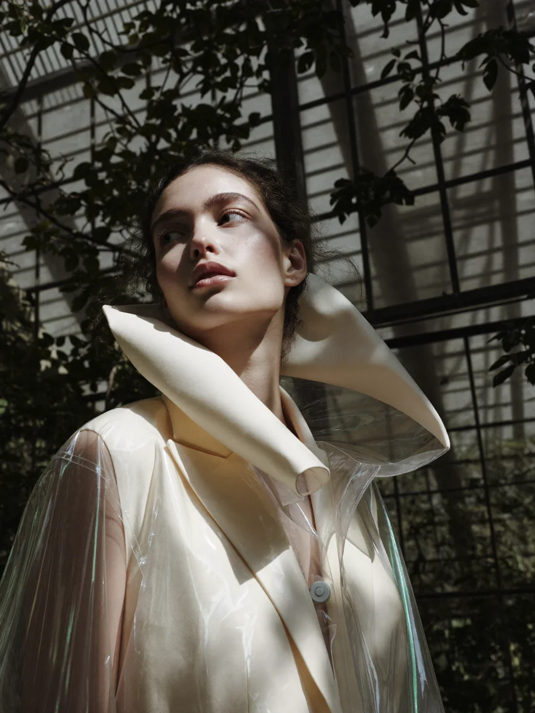
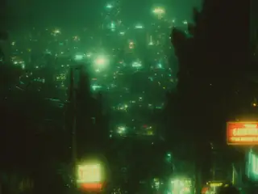
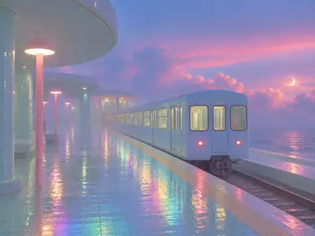

PV LAB / YOUR OWN CREATIVE DIRECTION 001
MOOD
MOOD
CREATOR.
Build a visual language
of your own.
Collect the light of one photograph, the texture of another and the atmosphere of a third. Develop an aesthetic from your references, then make it yours.



01 / PERSONAL CREATIVE DIRECTION
Your next visual language.
01 / INSPIRATION0 / 12 images
Your collection stays private. Up to 12 images. The Mood uses your saved art direction, not hidden photo references.
✳
Collect what inspires you. The light of one photograph, the texture of another. Then translate the feeling into something you can repeat.
02 / YOUR PRIVATE COLLECTION
My Moods
Your visual worlds will live here. Create your first Mood above.